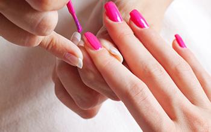
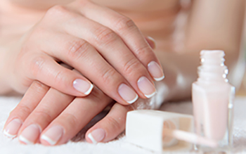
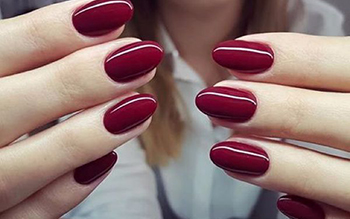
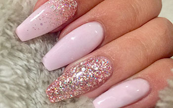
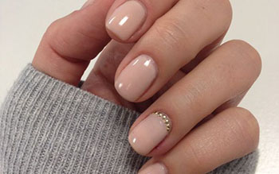
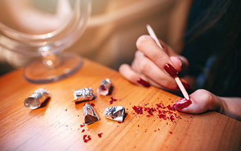

Manikyr
Tradisjonell manikyr inngår rensing av neglebånd, filing og forming av neglene, behandling av hender og kremer med olje og kremer og påføring av neglelakk etter ønsket farge.
Tid:20min
Pris:250kr
Fransk manikyr
Fransk manikyr er en svært populær negledesign som kjennetegnes av nøytral neglefarge med hvite negletipper. Negledesignen passer til de fleste antrekk og anledninger, og git et naturlig, men samtidig elegant resultat.
Tid:30min
Pris:300kr


Shellac
Shellac er en glansfull og skinnende neglelakk som er blitt svært populær de siste årene. Shellac er en patentert kombinasjon av neglelakk og gelenegler som produseres av CND, den unike kombinasjonen gjør at neglelakken blir ekstra skinnende og ikke minst at den varer lengre enn normal neglelakk.
Tid:45min
Pris:500kr
Akrylnegler
Akrylnegler er den eldste og en av de mest populære formene for kunstige eller falske negler innen den moderne skjønnhetsbransjen. Neglene er sterke, har lang holdbarhet, fungerer som negleforlenger og negleforsterker og gir i tillegg et perfekt lerrett for å negledesign med farge og dekor.
Tid:60min
Pris:800kr


Gélenegler
Gélenegler er sammen med akrylnegler de mest populære falske neglene på markedet i dag. Neglene har et svært naturlig preg, er sterke og samtidig fleksible. De påsettes raskere enn andre kunstige negler. Gélenegler egner seg derfor godt dersom du ønsker å styrke eller forlenge dine naturlige negler, eller dersom du ønsker å style deg opp til en spesiell anledning.
Tid:45min
Pris:800kr
Fjerning/påfyll
Dersom du ønsker å ta av kunstige negler, anbefaler vi at du får gjort det profosjonelt hos oss. Dette er for å sørge for at de ekte neglene ikke blir skadet og blir svake. Ønsker du derimot påfyll på kunstige negler, må dette skje innen 3-4 uker etter du tok de. Etter dette regnes det som en ny behandling med fullpris.
Pris på fjerning av negler:150kr
Pris på påfyll av akrylnegler:350kr
Pris på påfyll av gelénegler:350kr
